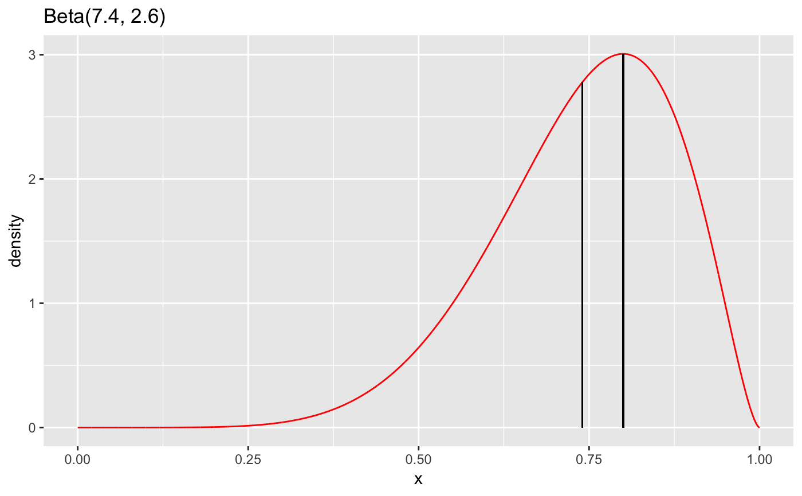

Given two parameters which characterize a beta distribution,
compute the remaining parameters in the following set
shape1 (a), shape2 (2), mean, mode, sd, and concentration (k).
beta_params(shape1 = NULL, shape2 = NULL, mean = NULL, sd = NULL, concentration = NULL, mode = NULL, a = shape1, b = shape2, k = concentration, plot = FALSE, ...)
| shape1, a | first shape parameter |
|---|---|
| shape2, b | second shape paramter |
| mean | mean of beta distribution |
| sd | standard deviation of beta distribution |
| concentration, k | concentration of beta distribution |
| mode | mode of beta distribution |
| plot | logical indicating whether a plot of the distribution should be displayed. |
| ... | additional arguments passed to |
beta_params(10, 5)#> # A tibble: 1 x 6 #> shape1 shape2 mean mode sd concentration #> <dbl> <dbl> <dbl> <dbl> <dbl> <dbl> #> 1 10 5 0.667 0.692 0.118 15beta_params(mean = 0.8, concentration = 10)#> # A tibble: 1 x 6 #> shape1 shape2 mean mode sd concentration #> <dbl> <dbl> <dbl> <dbl> <dbl> <dbl> #> 1 8 2.00 0.8 0.875 0.121 10beta_params(mean = 0.8, k = 10)#> # A tibble: 1 x 6 #> shape1 shape2 mean mode sd concentration #> <dbl> <dbl> <dbl> <dbl> <dbl> <dbl> #> 1 8 2.00 0.8 0.875 0.121 10beta_params(mode = 0.8, concentration = 10)#> # A tibble: 1 x 6 #> shape1 shape2 mean mode sd concentration #> <dbl> <dbl> <dbl> <dbl> <dbl> <dbl> #> 1 7.4 2.60 0.74 0.8 0.132 10beta_params(mode = 0.8, k = 10)#> # A tibble: 1 x 6 #> shape1 shape2 mean mode sd concentration #> <dbl> <dbl> <dbl> <dbl> <dbl> <dbl> #> 1 7.4 2.60 0.74 0.8 0.132 10beta_params(mode = 0.8, k = 10, plot = TRUE, color = "red")#> # A tibble: 1 x 6 #> shape1 shape2 mean mode sd concentration #> <dbl> <dbl> <dbl> <dbl> <dbl> <dbl> #> 1 7.4 2.60 0.74 0.8 0.132 10